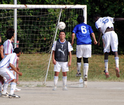
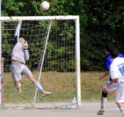

|
OiFuto, Saturday 25th August,
Lions kick-off the Division 2 league on a hot Saturday in OiDai1, against the newly relegated Jetro. Lions had a strong 15-man squad, whereas Jetro had only 10 players.
Lions opted to start last year's top scorer Gaafar Somi, who was nursing a groin injury, but his quality in dictating the midfield was next to none, and was evident from the vast spells of passing that Lions enjoyed with Jetro kept at bay.
Lions almost scored in the first 3 minutes when Ahmed Gaafar outran the defence, only to see his shot pushed away to a corner. Soon afterwards, Ahmed was again close to scoring, this time the ball bouncing off the post back into the keeper's hands.
After about 10 minutes, a short corner saw Hussein the right-back, put in an inch perfect cross for Somi to head in from 7 yards. Although Jetro cleared the ball, it was clearly a yard too late as judged by the referee and linesman.
Half way through, Hussein went past a couple of players, and just as he was to unleash a shot, his heels were clipped, and brought down in the box, but the referee amazingly waved the play on!
Justice was done on the 30-minute mark when Ken Hersche broke the offside trap to get on the end of the ball, firing home from 15 yards to make it 2-0.
A very positive first half saw Jetro limited to 1 shot on target, with the only bad news of the 1st half being the exit of Gaafar Somi, after aggravating his injury following a brilliant run past a few players into the box.
The second half saw Jetro come back strong, and although Lions midfielders were excellent, Jetro caused a few scares, and may have scored a goal or 2, but the efforts were no match for the new outstanding Lions keeper, Orlando Torres, who may well be the secret of Lions success this season.
Lions continued plucking away, and the tall and talented Zuhair Sule, who was limited to a couple of appearances towards the end of last season's Lions revival, unleashed a 25-yarder into the top left corner to make it 3-0. Other shots from Zuhair and Haitham could've added to the goals.
Ken Hersched could've doubled his tally when a through ball saw him 1-on-1 with the keeper, but his finishing was casual as everyone expected an offside ruling but the flag stayed down as the left back played Ken on. Ken however made ammends a few minutes later when he slotted home from close range to make it 4-0.
The score could've been a lot more had AbubAkar Birkia (known as Afro, or Twinkle toes by some) played his usual game. Surprisngly, his performance was way under par for his quality, and as he was subsituted, his promise to make ammends next game, makes the France clash even more interesting.
Somi would've easily won the Man of the Match vote had he stayed on, however, the team voted last season's 2nd top scorer for Lions, Ken Hersche as Man of the Match in his new role as a centre forward that saw him terrorise the defence and score 2 goals.
Lions may remain top of the table for the weekend, but the plan is to be there come the end of Season 5.
MOM: Ken Hersche
Report by Hussein Shehata
|